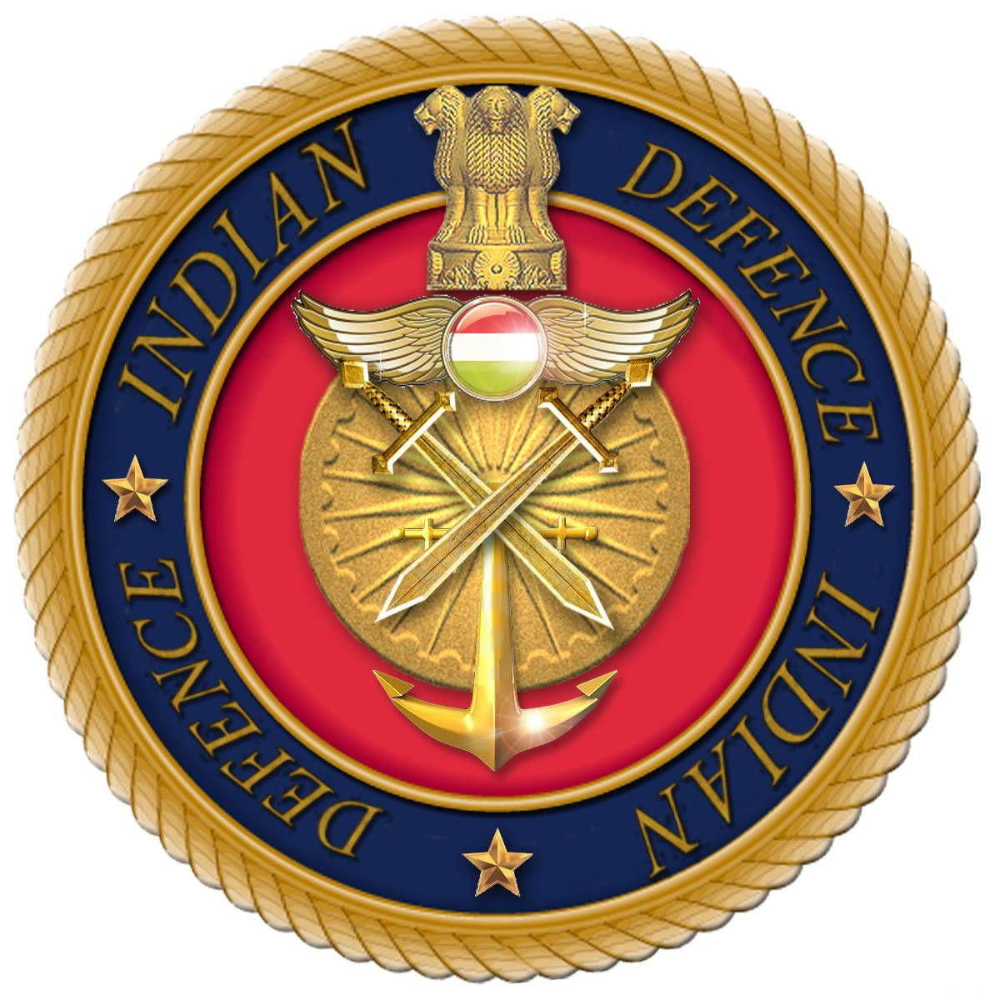
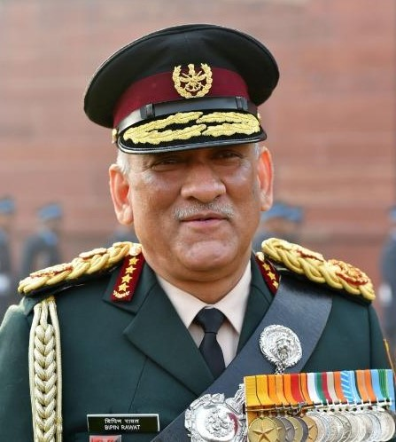
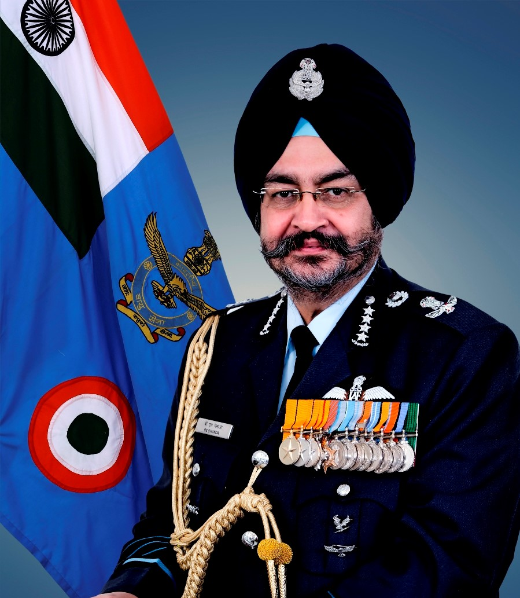
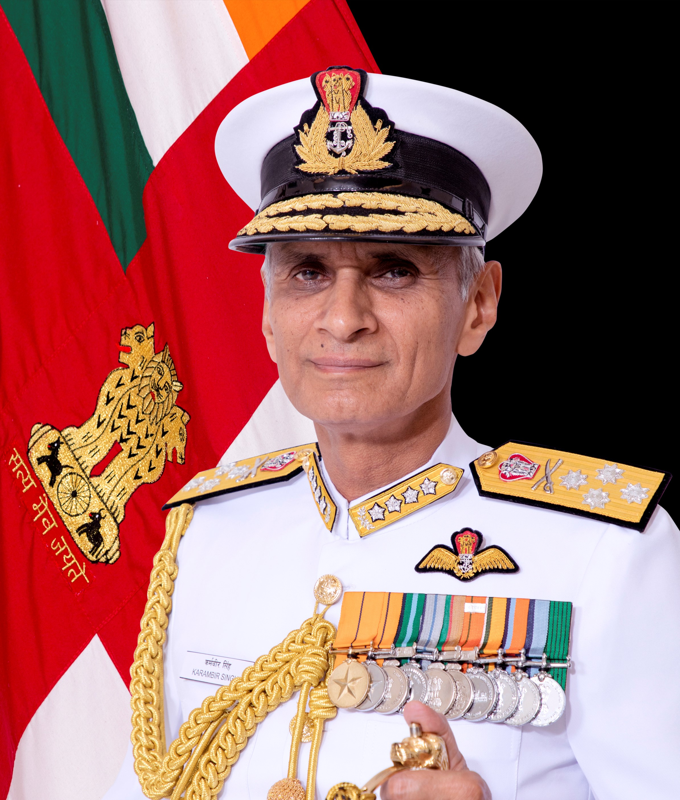

DEFENCE
People who are passionate about serving the nation and wish to contribute towards maintaining national peace can opt for a career in the Indian Army. The main objective of the Indian army is to maintain national peace and security by defending the country from external threats and attacks.It holds a GFP rank of 4 and is thus, one of the largest armed forces of the world.The zeal, enthusiasm, and desire to serve the nation can be fulfilled by joining Indian army.
HOW TO JOIN INDIAN ARMY AFTER CLASS 12 ?
- Candidates who have passed the class 12 exams or its equivalent are 16.5 to 19 years of age can apply for Indian Army Entries through National Defence Academy (NDA).
- Candidates will have to undergo 3 years of training at NDA and one year at IMA to get placed in the Indian Army.
- Entry in the NDA will be based on entrance exam that is conducted twice a year i.e. NDA I and NDA II.
- Once the candidates have cleared the written exam, they are called for SSB interview and medical assessment round.
- Final selections are done on the basis of in NDA written exam, performance in SSB interview and reports in the medical assessment.
SCHEME OF NDA ENTRANCE EXAM
The subjects of the written examination, the time allowed and the maximum marks allotted to each subject will be as follows:
- Mathematics (01) – 2-½ Hours (300 Marks)
- General Ability Test (02) – 2-½ Hours (600 Marks)
Total 900 Marks
The question papers (Test Booklets) of Mathematics and of General Ability Test will be set bilingually in Hindi as well as in English

NATIONAL DEFENCE ACADEMY (NDA)
The National Defence Academy (NDA) is the joint defence service training institute of the Indian Armed Forces, where cadets of the three services i.e. the Indian Military Service , the Indian Naval Service and the Indian Air Force Service train together before they go on to respective service academy for further pre-commission training. The NDA is located in Khadakwasla, Pune, Maharashtra.It is the first tri-service academy in the world.
WORK DESCRIPTION
- Make a contribution towards nation building
- Support in maintaining internal security of the country
- Manage security interventions and secure the border
- Plan maneuvers, assign duties and communicate effectively with other staff
- Take on specialist duties and skills such as engineering, air traffic control, training and administration and many more
NOTABLE ALUMNI

General Bipin Rawat
INDIAN ARMY

Air Chief Marshal Birender Singh Dhanoa
INDIAN AIR FORCE

Admiral Karambir Singh
INDIAN NAVY